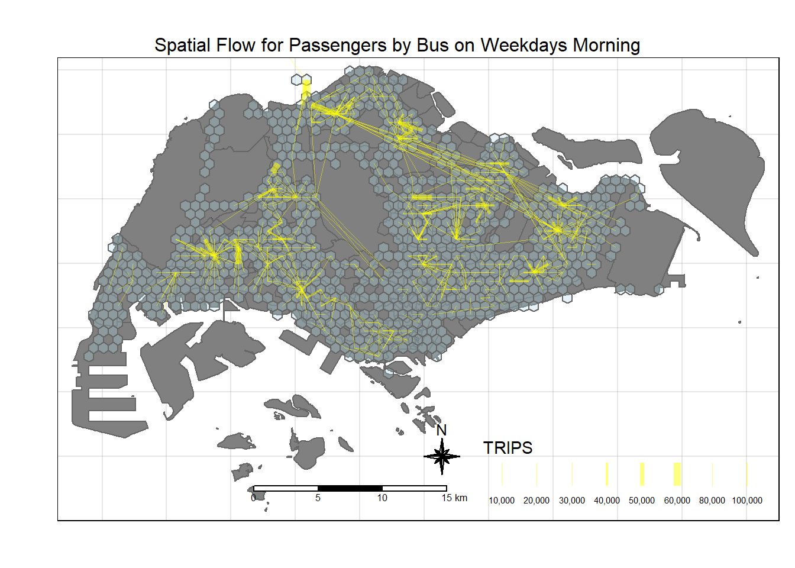
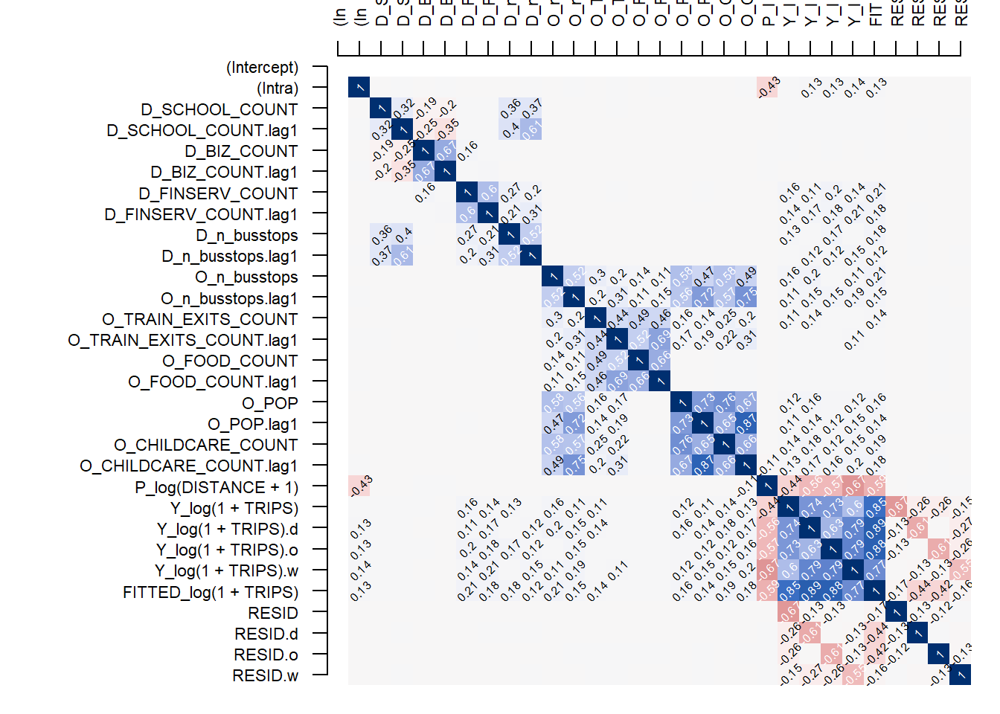

pacman::p_load(tmap, sf, sp, DT,
performance, reshape2,
ggpubr, tidyverse, stplanr, jsonlite)Take Home Ex 2
Overview of the Exercise
What are the driving forces behind urban dwellers to weak up early in morning to commute from their home locations to their work places? What are the impact of removing a public bus service on the commuters reside along the corridor of the bus route? These and many other questions related to urban mobility are challenges faced by transport operators and urban managers.
To provide answer to this question, traditionally, commuters survey will be used. However, commuters survey is a very costly, time-consuming and laborous, not to mention that the survey data tend to take a long time to clean and analyse. As a result, it is not unusual, by the time the survey report was ready, most of the information already out-of-date!
As city-wide urban infrastructures such as public buses, mass rapid transits, public utilities and roads become digital, the data sets obtained can be used as a framework for tracking movement patterns through space and time. This is particularly true with the recent trend of massive deployment of pervasive computing technologies such as GPS on the vehicles and SMART cards used by public transport commuters.
Unfortunately, this explosive growth of geospatially-referenced data has far outpaced the planner’s ability to utilize and transform the data into insightful information thus creating an adverse impact on the return on the investment made to collect and manage this data.
This take-home exercise is motivated by two main reasons. Firstly, despite increasing amounts of open data available for public consumption, there has not been significant practice research carried out to show how these disparate data sources can be integrated, analysed, and modelled to support policy making decisions.
Secondly, there is a general lack of practical research to show how geospatial data science and analysis (GDSA) can be used to support decision-making.
Hence, your task for this take-home exercise is to conduct a case study to demonstrate the potential value of GDSA to integrate publicly available data from multiple sources for building a spatial interaction models to determine factors affecting urban mobility patterns of public bus transit.
Open Gov Data
For the purpose of this assignment, data from several open government sources will be used:
Passenger Volume by Origin Destination Bus Stops, Bus Stop Location, Train Station and Train Station Exit Point, just to name a few of them, from LTA DataMall.
Master Plan 2019 Subzone Boundary, HDB Property Information, School Directory and Information and other relevant data from Data.gov.sg.
Added the data of childcare services obtained from onemap.gov.sg
Specially collected data
- Businesses, retail and services, leisure and recreation, etc geospatial data sets assemble by course instructor. (Refer to eLearn)
The specific tasks of this take-home exercise are as follows:
Derive an analytical hexagon data of 375m (this distance is the perpendicular distance between the centre of the hexagon and its edges) to represent the traffic analysis zone (TAZ).
With reference to the time intervals provided in the table below, construct an O-D matrix of commuter flows for a time interval of your choice by integrating Passenger Volume by Origin Destination Bus Stops and Bus Stop Location from LTA DataMall. The O-D matrix must be aggregated at the analytics hexagon level
Peak hour period Bus tap on time What it Means (Likely) Weekday morning peak 6am to 9am Going to work and school (our data will be focused on this) Weekday afternoon peak 5pm to 8pm Returning home from work or school Weekend/holiday morning peak 11am to 2pm Heading out for retail shopping, attractions etc Weekend/holiday evening peak 4pm to 7pm Returning home for Mon Blues Display the O-D flows of the passenger trips by using appropriate geovisualisation methods (not more than 5 maps).
Describe the spatial patterns revealed by the geovisualisation (not more than 100 words per visual).
Assemble at least three propulsive and three attractiveness variables by using aspatial and geospatial from publicly available sources.
Compute a distance matrix by using the analytical hexagon data derived earlier.
Spatial Interaction Modelling
Calibrate spatial interactive models to determine factors affecting urban commuting flows at the selected time interval.
Present the modelling results by using appropriate geovisualisation and graphical visualisation methods. (Not more than 5 visuals)
With reference to the Spatial Interaction Model output tables, maps and data visualisation prepared, describe the modelling results. (not more than 100 words per visual).
Getting Started
So for the purpose of this exercise - I will focus on the Weekdays Morning Travel Period.
I will also utilise the writing and loading of rds to reduce the rendering and loading time as well as make the site more reproducible.
Loading the Packages
Preparing the Flow Data
#|eval: false
odbus <- read_csv("data/aspatial/origin_destination_bus_202310.csv")#|eval: false
odbus6_9 <- odbus %>%
filter(DAY_TYPE == "WEEKDAY") %>%
filter(TIME_PER_HOUR >= 6 &
TIME_PER_HOUR <= 9) %>%
group_by(ORIGIN_PT_CODE,
DESTINATION_PT_CODE) %>%
summarise(TRIPS = sum(TOTAL_TRIPS))#|eval: false
busstops = st_read(dsn = "data/geospatial",
layer = "BusStop") %>%
st_transform (crs = 3414)Reading layer `BusStop' from data source
`C:\zjjgithubb\ISSS624\TakehomeEx\Ex02\data\geospatial' using driver `ESRI Shapefile'
Simple feature collection with 5161 features and 3 fields
Geometry type: POINT
Dimension: XY
Bounding box: xmin: 3970.122 ymin: 26482.1 xmax: 48284.56 ymax: 52983.82
Projected CRS: SVY21Create analytical hexagon data of 325m (this distance is the perpendicular distance between the centre of the hexagon and its edges) - so should be c(750, 750).
#|eval: false
hexagon_grid = st_make_grid(busstops, c(750, 750), what = "polygons", square = FALSE)
hexagon_grid_sf = st_sf(hexagon_grid) %>%
mutate(grid_id = 1:length(lengths(hexagon_grid)))#|eval: false
hexagon_grid_sf$n_busstops = lengths(st_intersects(hexagon_grid_sf, busstops))
hexagon_busstop = filter(hexagon_grid_sf, n_busstops > 0)
busstop_grid <- st_intersection(busstops, hexagon_grid_sf)%>%
select(BUS_STOP_N, grid_id) %>%
st_drop_geometry()#|eval: false
od_data_wdam <- left_join(odbus6_9 , busstop_grid,
by = c("ORIGIN_PT_CODE" = "BUS_STOP_N")) %>%
rename(ORIGIN_BS = ORIGIN_PT_CODE,
ORIGIN_Grid = grid_id,
DESTIN_BS = DESTINATION_PT_CODE)#|eval: false
duplicate <- od_data_wdam %>%
group_by_all() %>%
filter(n()>1) %>%
ungroup()#|eval: false
od_data_wdam <- unique(od_data_wdam)#|eval: false
od_data_wdam <- left_join(od_data_wdam , busstop_grid,
by = c("DESTIN_BS" = "BUS_STOP_N"))
duplicate <- od_data_wdam %>%
group_by_all() %>%
filter(n()>1) %>%
ungroup()
od_data_wdam <- unique(od_data_wdam)
od_data_wdam <- od_data_wdam %>%
rename(DESTIN_Grid = grid_id) %>%
drop_na() %>%
group_by(ORIGIN_Grid, DESTIN_Grid) %>%
summarise(MORNING_PEAK = sum(TRIPS))
#Removing Intra-Grid Flow
od_wdam_cleaned <- od_data_wdam[od_data_wdam$ORIGIN_Grid!=od_data_wdam$DESTIN_Grid,]Write/Read Data into rds for Subsequent Usage
Code
write_rds(hexagon_busstop, "data/rds/hexagon_busstop.rds")
write_rds(od_wdam_cleaned, "data/rds/od_wdam_cleaned.rds")
write_rds(hexagon_grid_sf, "data/rds/hexagon_grid_sf.rds")Code
hexagon_bustops <- read_rds("data/rds/hexagon_busstop.rds")
od_wdam_cleaned <- read_rds("data/rds/od_wdam_cleaned.rds")
hexagon_grid_sf <- read_rds("data/rds/hexagon_grid_sf.rds")
schools_sf <- read_rds("data/rds/schools_sf.rds")
mpsz <- read_rds("data/rds/mpsz.rds")
flow_data_tidy <- read_rds("data/rds/flow_data_tidy.rds")Visualising the Spatial Interaction
Code
flowLine <- od2line(flow = od_wdam_cleaned,
zones = hexagon_grid_sf,
zone_code = "grid_id")Code
tmap_options(check.and.fix = TRUE)
tmap_mode("plot")
tm_shape(mpsz) +
tm_polygons(col = "black", alpha = 0.5) +
tm_layout(main.title = "Spatial Flow for Passengers by Bus on Weekdays Morning",
main.title.position = "center",
main.title.size = 1.0,
frame = TRUE) +
tm_borders(alpha = 0.5) +
tm_compass(type="8star", size = 2) +
tm_scale_bar() +
tm_grid(alpha =0.2, labels.show = FALSE)+
tm_shape(hexagon_bustops) +
tm_polygons(alpha = 0.3, col = "lightblue") +
flow_data_tidy %>%
filter(TRIPS >= 5000) %>%
tm_shape() +
tm_lines(lwd = "TRIPS",
style = "quantile",
scale = c(0.1, 1, 3, 5, 7, 10),
n = 6,
col = "yellow",
alpha = 0.5)
Code
tmap_options(check.and.fix = TRUE)
tmap_mode("plot")
tm_shape(mpsz) +
tm_polygons(col = "black", alpha = 0.5) +
tm_layout(main.title = "Spatial Flow for Passengers by Bus on Weekdays Morning, Dist > 10km",
main.title.position = "center",
main.title.size = 1.0,
frame = TRUE) +
tm_borders(alpha = 0.5) +
tm_compass(type="8star", size = 2) +
tm_scale_bar() +
tm_grid(alpha =0.2, labels.show = FALSE)+
tm_shape(hexagon_bustops) +
tm_polygons(alpha = 0.3, col = "lightblue") +
flow_data_tidy %>%
filter(TRIPS>=5000, DIST >= 10000) %>%
tm_shape() +
tm_lines(lwd = "TRIPS",
style = "quantile",
scale = c(0.1, 1, 3, 5, 7, 10),
n = 6,
col = "yellow",
alpha = 0.5)Analysis of Spatial Flow
From the spatial flow, it seems that there are a few identified areas where people are taking buses to during the morning peak period:
Travelling from Malaysia to Singapore through the Causeway - which accounts for a very high number. And it seems they will make their way towards Woodlands and branch out from that region.
Other regions include areas like Yishun, Tampines, Jurong, Boon Lay.
There are some long distances travel between Woodlands towards Changi, i.e. from the North to the Eastern Part of Singapore. This is probably due to a lack of direct MRT Lines, and that the Buses travelling on the Expressway would provide a speedier route.
Spatial Patterns
Attractiveness Variables
We will compile three attractiveness variables, namely:
Schools (their place of study)
Business (their place of work)
F&B (to buy breakfast before heading to their final destination, assuming that they will buy food nearer to their location)
Financial Services (locations about the banks and money changers in Singapore - assuming that people will travel there to work in the morning)
hexagon_bustops$SCHOOL_COUNT <- lengths(
st_intersects(
hexagon_bustops, schools_sf))sum(hexagon_bustops$SCHOOL_COUNT)We assume that the businesses equate to the companies etc that people will travel to for their work.
business_sf <- st_read(dsn = "data/geospatial",
layer = "Business")business_sf<- unique(business_sf)hexagon_bustops$BIZ_COUNT <- lengths(
st_intersects(
hexagon_bustops, business_sf))food_sf <- st_read(dsn = "data/geospatial",
layer = "F&B") %>%
st_transform (crs=3414)food_sf<- unique(food_sf)hexagon_bustops$FOOD_COUNT <- lengths(
st_intersects(hexagon_bustops, food_sf))finserv_sf <- st_read(dsn='data/geospatial',
layer='FinServ') %>%
st_transform(crs=3414)finserv <- unique(finserv_sf)hexagon_bustops$FINSERV_COUNT <- lengths(
st_intersects(hexagon_bustops, finserv_sf))Propulsive Variables
We will look at three propulsive variables, namely:
Number of Population
Number of Train Stations Exits
Number of Bus Stops (already available since Take Home Ex 1)
Location of Pre Schools (assuming parents will bring their child to the nearest pre-school which should be within walking distance, before going to the nearest bus stop to travel for work)
Number of Buses available within each grid - tried to obtain the bus route data from LTA Data Mall, but there data seems limited and outdated (no actual date on when it was last updated); so decided not to pursue this.
Preparing the Data on Populace
We utilise the hdb data provided by Prof.
hdb <- read_csv ("data/aspatial/hdb.csv")Based on the data, we will be able to intersect the locations, types of dwellings (whether 1-room, 2-room, rental and etc) to have an estimate on the number of population in each grid.
So based on past studies in 2018:
| Types of Dwelling | Average Household Size | Remarks |
|---|---|---|
| 1-Room / Rental | 2.3 | |
| 2-Room | 2.19 | |
| 3-Room | 2.63 | |
| 4-Room | 3.42 | |
| 5-Room / Exec | 3.77 |
hdb_tidy <- hdb %>%
select(13:25, "lat", "lng") %>%
mutate(one_Rm = (`1room_sold` + `1room_rental` + studio_apartment_sold + other_room_rental)*2.3) %>%
mutate(two_Rm = (`2room_sold` + `2room_rental`)*2.19) %>%
mutate(three_Rm = (`3room_sold` + `3room_rental`)*2.63) %>%
mutate(four_Rm = (`4room_sold`) * 3.42) %>%
mutate(five_rm = (`5room_sold` + `exec_sold` + multigen_sold)*3.77)hdb_tidy <- hdb_tidy %>%
select (14:20) %>%
mutate (pop = one_Rm + two_Rm + three_Rm + four_Rm + five_rm)Covert to sf data.
hdb_sf <- st_as_sf(hdb_tidy,
coords = c("lng", "lat"),
crs = 4326) %>%
st_transform (crs=3414)
write_rds (hdb_sf, "data/rds/hdb_sf.rds")hexagon_bustops$POP <- sapply(
st_intersects(hexagon_bustops, hdb_sf),
function(indices) sum(hdb_sf$pop[indices])
)Train Station Exit
I think that the train station exits can be considered as both propulsive and attractive, e.g. people will take buses to the nearest train station exit, then take on the mrt to their next destination.
But they can also exit from the train station, then proceed to take bus to their place of work or study.
I downloaded the static shp file of the train station exits from LTADataMall.
train_exits_sf <- st_read(dsn = "data/geospatial",
layer = "Train_Station_Exit_Layer") %>%
st_transform (crs=3414)hexagon_bustops$TRAIN_EXITS_COUNT <- lengths(
st_intersects(
hexagon_bustops, train_exits_sf))Location of Pre-Schools
Using the Onemap API, I gain access to the “Child Care Services†theme.
This is updated by ECDA in Dec 23 and i saved it in JSON format.
I will use the jsonlite package to convert the data.
childcare <- fromJSON("data/aspatial/childcare.json", flatten = TRUE)childcare_tidy <- childcare %>%
select(9:14) %>%
slice(-1) %>%
separate(col = SrchResults.LatLng, into = c("lat", "long"), sep = ",", convert = TRUE)childcare_sf <- st_as_sf(childcare_tidy,
coords = c("long", "lat"),
crs = 4326) %>%
st_transform (crs=3414)hexagon_bustops$CHILDCARE_COUNT <- lengths(
st_intersects(
hexagon_bustops, childcare_sf))All the data were combined and written into an rds file.
write_rds (hexagon_bustops, "data/rds/combined_data.rds")combined_data <- read_rds("data/rds/combined_data.rds")Visualising the Flow with the Variables
Code
tmap_options(check.and.fix = TRUE)
tmap_mode("plot")
tm_shape(mpsz) +
tm_polygons(col = "grey", alpha = 0.5) +
tm_layout(main.title = "Spatial Flow for Passengers by Bus on Weekdays Morning",
main.title.position = "center",
main.title.size = 1.0,
frame = TRUE) +
tm_borders(alpha = 0.5) +
tm_compass(type="8star", size = 2) +
tm_scale_bar() +
tm_grid(alpha =0.2, labels.show = FALSE)+
tm_shape(combined_data[combined_data$SCHOOL_COUNT > 1, ]) +
tm_borders() +
tm_fill("SCHOOL_COUNT", alpha = 0.3) +
flow_data_tidy %>%
filter(TRIPS>=5000) %>%
tm_shape() +
tm_lines(lwd = "TRIPS",
style = "quantile",
scale = c(0.1, 1, 3, 5, 7, 10),
n = 6,
col = "yellow",
alpha = 0.5)Code
tmap_options(check.and.fix = TRUE)
tmap_mode("plot")
tm_shape(mpsz) +
tm_polygons(col = "grey", alpha = 0.5) +
tm_layout(main.title = "Spatial Flow for Passengers by Bus on Weekdays Morning",
main.title.position = "center",
main.title.size = 1.0,
frame = TRUE) +
tm_borders(alpha = 0.5) +
tm_compass(type="8star", size = 2) +
tm_scale_bar() +
tm_grid(alpha =0.2, labels.show = FALSE)+
tm_shape(combined_data[combined_data$SCHOOL_COUNT > 1, ]) +
tm_borders() +
tm_fill("BIZ_COUNT", alpha = 0.3) +
flow_data_tidy %>%
filter(TRIPS>=5000) %>%
tm_shape() +
tm_lines(lwd = "TRIPS",
style = "quantile",
scale = c(0.1, 1, 3, 5, 7, 10),
n = 6,
col = "yellow",
alpha = 0.5)Code
tmap_options(check.and.fix = TRUE)
tmap_mode("plot")
tm_shape(mpsz) +
tm_polygons(col = "grey", alpha = 0.5) +
tm_layout(main.title = "Spatial Flow for Passengers by Bus on Weekdays Morning",
main.title.position = "center",
main.title.size = 1.0,
frame = TRUE) +
tm_borders(alpha = 0.5) +
tm_compass(type="8star", size = 2) +
tm_scale_bar() +
tm_grid(alpha =0.2, labels.show = FALSE)+
tm_shape(combined_data[combined_data$SCHOOL_COUNT > 1, ]) +
tm_borders() +
tm_fill("POP", alpha = 0.3) +
flow_data_tidy %>%
filter(TRIPS>=5000) %>%
tm_shape() +
tm_lines(lwd = "TRIPS",
style = "quantile",
scale = c(0.1, 1, 3, 5, 7, 10),
n = 6,
col = "yellow",
alpha = 0.5)Spatial Interaction Modelling
Computing the Distance Matrix
hexa_sp <- as(hexagon_busstop,"Spatial")
hexa_spdist <- spDists(hexa_sp,
longlat = FALSE) #latlong is FALSE cuz its is in Svy21 alr
head(dist, n=c(10, 10))hexa_id <- hexagon_busstop$grid_idcolnames(dist) <- paste0(hexa_id) rownames(dist) <- paste0(hexa_id)distPair <- melt(dist) %>% rename(dist = value) head(distPair, 10)distPair$dist <- ifelse(distPair$dist == 0,
50, distPair$dist)distPair <- distPair %>% rename(orig = Var1,
dest = Var2)write_rds(distPair, "data/rds/distPair.rds") distPair <- read_rds("data/rds/distPair.rds")Preparing the Flow Data
Grouping the Flow Data
flow_data <- od_wdam_cleaned %>%
group_by(ORIGIN_Grid, DESTIN_Grid) %>%
summarize(TRIPS = sum(MORNING_PEAK)) flow_data <- od2line(flow = flow_data,
zones = hexagon_grid_sf,
zone_code = "grid_id")Separating the Intra-Flow Data
flow_data$FlowNoIntra <- ifelse(
flow_data$ORIGIN_Grid == flow_data$DESTIN_Grid,
0, flow_data$TRIPS)
flow_data$offset <- ifelse(
flow_data$ORIGIN_Grid == flow_data$DESTIN_Grid,
0.000001, 1)Combining Passenger Volume Data with Dist Data
flow_data1 <- flow_data %>%
left_join (distPair,
by = c("ORIGIN_Grid" = "orig",
"DESTIN_Grid" = "dest"))Combining the Data with Propulsive and Attractive Variables Data
combined_tidy <- combined_data %>%
st_drop_geometry()combined_tidy$DESTIN_TRAIN_EXITS <- combined_tidy$TRAIN_EXITS_COUNTflow_data_tidy <- flow_data1 %>%
left_join(
combined_tidy %>%
select(grid_id, SCHOOL_COUNT, BIZ_COUNT, FINSERV_COUNT, FOOD_COUNT, DESTIN_TRAIN_EXITS),
by = c("DESTIN_Grid" = "grid_id")
) %>%
rename(DIST = dist)flow_data_tidy <- flow_data_tidy %>%
left_join(
combined_tidy %>%
select(grid_id, POP, TRAIN_EXITS_COUNT, CHILDCARE_COUNT, n_busstops),
by = c("ORIGIN_Grid" = "grid_id")
) Ensure variables with value = 0 are adjusted to 0.99.
Code
flow_data_tidy$SCHOOL_COUNT <- ifelse(
flow_data_tidy$SCHOOL_COUNT == 0,
0.99, flow_data_tidy$SCHOOL_COUNT)
flow_data_tidy$BIZ_COUNT <- ifelse(
flow_data_tidy$BIZ_COUNT == 0,
0.99, flow_data_tidy$BIZ_COUNT)
flow_data_tidy$FINSERV_COUNT <- ifelse(
flow_data_tidy$FINSERV_COUNT == 0,
0.99, flow_data_tidy$FINSERV_COUNT)
flow_data_tidy$FOOD_COUNT <- ifelse(
flow_data_tidy$FOOD_COUNT == 0,
0.99, flow_data_tidy$FOOD_COUNT)
flow_data_tidy$TRAIN_EXITS_COUNT <- ifelse(
flow_data_tidy$TRAIN_EXITS_COUNT == 0,
0.99, flow_data_tidy$TRAIN_EXITS_COUNT)
flow_data_tidy$DESTIN_TRAIN_EXITS <- ifelse(
flow_data_tidy$DESTIN_TRAIN_EXITS == 0,
0.99, flow_data_tidy$DESTIN_TRAIN_EXITS)
flow_data_tidy$POP <- ifelse(
flow_data_tidy$POP == 0,
0.99, flow_data_tidy$POP)
flow_data_tidy$CHILDCARE_COUNT <- ifelse(
flow_data_tidy$CHILDCARE_COUNT == 0,
0.99, flow_data_tidy$CHILDCARE_COUNT)write_rds (flow_data_tidy, "data/rds/flow_data_tidy.rds")Calibrating Spatial Interaction Models
flow_data_tidy <- read_rds ("data/rds/flow_data_tidy.rds")We will calibrate separate Spatial Interaction Models for inter- and intra-zonal flows. For the Ex, we will focus our attention on inter-zonal flow. Hence, we need to exclude the intra-zonal flow from flow_data.
First, two new columns called FlowNoIntra and offset will be created by using the code chunk below.
flow_data_tidy$FlowNoIntra <- ifelse(
flow_data_tidy$ORIGIN_Grid == flow_data_tidy$DESTIN_Grid,
0, flow_data_tidy$TRIPS)
flow_data_tidy$offset <- ifelse(
flow_data_tidy$ORIGIN_Grid == flow_data_tidy$DESTIN_Grid,
0.000001, 1)According to the syntax used to derive values in FlowNoIntra field, all intra-zonal flow will be given a value of 0 or else the original flow values will be inserted.
Next, inter-zonal flow will be selected from flow_data and save into a new output data.frame called inter_zonal_flow by using the code chunk below.
inter_zonal_flow <- flow_data_tidy %>%
filter(FlowNoIntra > 0) %>%
mutate(ORIGIN_Grid = as.factor(ORIGIN_Grid)) %>%
mutate(DESTIN_Grid = as.factor(DESTIN_Grid)) Basic Plot of the Inter Zonal Flow Data
ggplot(data = inter_zonal_flow,
aes(x = TRIPS)) +
geom_histogram(color='black',size= 0.3, fill = 'lightblue') +
labs(y= 'Count of TRIPS', x='TRIPS') +
theme(axis.title.y=element_text(angle = 0),
plot.title = element_text(face="bold")) +
ggtitle('Distribution of TRIPS')It seems to suggest that we should use a Poisson Regression Model.
Unconstrained Spatial Interaction Model
uncSIM <- glm(formula = TRIPS ~
log(SCHOOL_COUNT) +
log(BIZ_COUNT) +
log(FINSERV_COUNT) +
log(FOOD_COUNT) +
log(POP) +
log(TRAIN_EXITS_COUNT) +
log(DESTIN_TRAIN_EXITS) +
log(CHILDCARE_COUNT) +
log(n_busstops) +
log(DIST),
family = poisson(link = "log"),
data = inter_zonal_flow,
na.action = na.exclude)
write_rds(uncSIM, "data/rds/uncSIM.rds")uncSIM <- read_rds("data/rds/uncSIM.rds")summary(uncSIM)uncSIM$coefficients (Intercept) log(SCHOOL_COUNT) log(BIZ_COUNT)
15.33097167 0.23284279 0.06175043
log(FINSERV_COUNT) log(FOOD_COUNT) log(POP)
0.27830717 -0.28600788 0.10317452
log(TRAIN_EXITS_COUNT) log(DESTIN_TRAIN_EXITS) log(CHILDCARE_COUNT)
0.15080169 0.47496463 0.23988144
log(n_busstops) log(DIST)
0.29547319 -1.44671342 Based on the results, all the coefficients are statistically significant. The most influential explanatory variables are distance, destination train exit count and origin number of bus stops with coefficients of -1.45, 0.475 and 0.295 respectively.
Origin - Constrained Model
Note
For origin-constrained model, only explanatory variables representing the attractiveness at the destinations will be used.
All the explanatory variables including distance will be log transformed.
ORIGIN_Grid is used to model ðœ‡ð‘– . It must be in categorical data type.
It is important to note that -1 is added in the equation after the distance variable. The -1 serves the purpose of removing the intercept that by default, glm will insert into the model.
orcSIM <- glm(formula = TRIPS ~
ORIGIN_Grid +
log(SCHOOL_COUNT) +
log(BIZ_COUNT) +
log(FINSERV_COUNT) +
log(FOOD_COUNT) +
log(DESTIN_TRAIN_EXITS) +
log(DIST) - 1,
family = poisson(link = "log"),
data = inter_zonal_flow,
na.action = na.exclude)
write_rds(orcSIM, "data/rds/orcSIM.rds")orcSIM <- read_rds("data/rds/orcSIM.rds")tail(summary(orcSIM)$coefficients, n = 10)Based on the results, all of the coefficients are statistically significant. The most influential explanatory variables are distance, destination train exit count and destination school count with coefficients of -1.5, 0.8 and 0.22 respectively.
Destination Constrained Model
Look at the propulsive variables.
decSIM <- glm(formula = TRIPS ~
DESTIN_Grid +
log(POP) +
log(CHILDCARE_COUNT) +
log(TRAIN_EXITS_COUNT) +
log(n_busstops) +
log(DIST) - 1,
family = poisson(link = "log"),
data = inter_zonal_flow,
na.action = na.exclude)
write_rds(decSIM, "data/rds/decSIM.rds")decSIM <- read_rds("data/rds/decSIM.rds")tail(summary(decSIM)$coefficients, n = 10) Estimate Std. Error z value Pr(>|z|)
DESTIN_Grid2405 17.5811819 5.002583e-03 3514.4207 0
DESTIN_Grid2406 14.5548014 2.397634e-02 607.0486 0
DESTIN_Grid2426 16.9283986 1.112556e-02 1521.5769 0
DESTIN_Grid2427 17.1907334 6.832253e-03 2516.1150 0
DESTIN_Grid2505 17.4420466 1.823257e-02 956.6424 0
log(POP) 0.1131565 8.436976e-05 1341.1971 0
log(CHILDCARE_COUNT) 0.2457757 3.667393e-04 670.1647 0
log(TRAIN_EXITS_COUNT) 0.2858289 3.261035e-04 876.4974 0
log(n_busstops) 0.2937858 5.204764e-04 564.4556 0
log(DIST) -1.4849210 2.627804e-04 -5650.8062 0Based on the results, all of the coefficients are statistically significant. The most influential explanatory variables are distance, origin number of bus stops and origin train exit count with coefficients of -1.48, 0.29 and 0.285 respectively.
Doubly Constrained Model
dbcSIM <- glm(formula = TRIPS ~
ORIGIN_Grid +
DESTIN_Grid +
log(DIST),
family = poisson(link = "log"),
data = inter_zonal_flow,
na.action = na.exclude)write_rds (dbcSIM, "data/rds/dbcSIM.rds")dbcSIM <- read_rds("data/rds/dbcSIM.rds")tail(summary(dbcSIM)$coefficients, n = 10) Estimate Std. Error z value Pr(>|z|)
DESTIN_Grid2361 -0.4335822 0.0477142410 -9.087061 1.017526e-19
DESTIN_Grid2364 -2.4268487 0.0554825623 -43.740746 0.000000e+00
DESTIN_Grid2379 -1.4134320 0.0546363548 -25.869808 1.456682e-147
DESTIN_Grid2384 0.5506025 0.0473633047 11.625087 3.072801e-31
DESTIN_Grid2405 1.1919496 0.0471732041 25.267514 7.271724e-141
DESTIN_Grid2406 -1.8422643 0.0526903433 -34.963984 7.938991e-268
DESTIN_Grid2426 0.6352864 0.0482337535 13.170992 1.288934e-39
DESTIN_Grid2427 0.9464266 0.0473875928 19.972033 9.644730e-89
DESTIN_Grid2505 0.5333907 0.0507135194 10.517722 7.158336e-26
log(DIST) -1.6077121 0.0002913633 -5517.894356 0.000000e+00The variable distance is statistically significant.
Model Comparisons
We will use compare_performance() of performance package.
First of all, let us create a list called model_list by using the code chunk below.
model_list <- list(unconstrained=uncSIM,
originConstrained=orcSIM,
destinationConstrained=decSIM,
doublyConstrained=dbcSIM)Next, we will compute the RMSE of all the models in model_list file by using the code chunk below.
compare_performance(model_list,
metrics = "RMSE")# Comparison of Model Performance Indices
Name | Model | RMSE
-----------------------------------------
unconstrained | glm | 1597.556
originConstrained | glm | 1470.300
destinationConstrained | glm | 1396.745
doublyConstrained | glm | 1172.123Goodness of Fit - Calculating RSquared Statistics
CalcRSquared <- function(observed, estimated){
r <- cor(observed, estimated)
R2 <- r^2
R2
}r_squared_values <- lapply(model_list, function(model) {
observed_values <- model$data$TRIPS
fitted_values <- model$fitted.values
CalcRSquared(observed_values, fitted_values)
})
# Print the R-squared values for each model
print(r_squared_values)$unconstrained
[1] 0.256333
$originConstrained
[1] 0.3696908
$destinationConstrained
[1] 0.4310837
$doublyConstrained
[1] 0.6000049It seems that the Doubly Constrained Model is the best fitted across the four models, as compared to the other three. the RMSE of the Doubly Constrained Model is also the lowest.
Visualising the Fitted Values
Code
df <- as.data.frame(uncSIM$fitted.values) %>%
round(digits = 0)Code
SIM_data <- inter_zonal_flow %>%
cbind(df) %>%
rename(uncTRIPS = "uncSIM.fitted.values")Code
df <- as.data.frame(orcSIM$fitted.values) %>%
round(digits = 0)Code
SIM_data <- SIM_data %>%
cbind(df) %>%
rename(orcTRIPS = "orcSIM.fitted.values")Code
df <- as.data.frame(decSIM$fitted.values) %>%
round(digits = 0)Code
SIM_data <- SIM_data %>%
cbind(df) %>%
rename(decTRIPS = "decSIM.fitted.values")Code
df <- as.data.frame(dbcSIM$fitted.values) %>%
round(digits = 0)Code
SIM_data <- SIM_data %>%
cbind(df) %>%
rename(dbcTRIPS = "dbcSIM.fitted.values")write_rds(SIM_data, "data/rds/SIM_data.rds")Code
unc_p <- ggplot(data = SIM_data,
aes(x = uncTRIPS,
y = TRIPS)) +
geom_point() +
geom_smooth(method = lm)
orc_p <- ggplot(data = SIM_data,
aes(x = orcTRIPS,
y = TRIPS)) +
geom_point() +
geom_smooth(method = lm)
dec_p <- ggplot(data = SIM_data,
aes(x = decTRIPS,
y = TRIPS)) +
geom_point() +
geom_smooth(method = lm)
dbc_p <- ggplot(data = SIM_data,
aes(x = dbcTRIPS,
y = TRIPS)) +
geom_point() +
geom_smooth(method = lm)
ggarrange(unc_p, orc_p, dec_p, dbc_p,
ncol = 2,
nrow = 2)From the graphs - I noticed that as the number of trips increase, the fit is not as good. Additionally, there are quite a fair bit of variability in the data.
Limitations about Spatial Interaction Model
I realised that there are some limitations to the Spatial Interaction Models, namely:
The models are sensitive to distance - distance seems to be still the most influential factor in predicting the flow.
The models ignore the socio-economic factors of the population.
The models fail to explain the complex spatial patterns, e.g. accounting for the dependence between the hexagons, i.e. they are not independent.
Spatial Econometric Interaction Modelling (SEIM)
Since Prof talked about the SEIM in the class today, I want to see how we can use it for this take home ex 2.
Package Required
In this exercise, the development version (0.1.0.9010) of spflow will be used instead of the released version (0.1.0). The code chunk below will be used to install the development version of spflow package.
devtools::install_github("LukeCe/spflow")pacman::p_load(tmap, sf, spdep, sp, Matrix,
spflow, reshape2, knitr,
tidyverse)Data Preparation
Before we can calibrate Spatial Econometric Interaction Models by using spflow package, three data sets are required. They are:
a spatial weights,
a tibble data.frame consists of the origins, destination, flows and distances between the origins and destination, and
a tibble data.frame consists of the explanatory variables.
Our geographical data has already been built in the earlier segments and using the hexagonal grid.
Preparing the Weights Data
grid_busstops <- read_rds("data/rds/hexagon_busstop.rds")centroids <- suppressWarnings({
st_point_on_surface(st_geometry(hexagon_busstop))})
grid_nb <- list(
"by_contiguity" = poly2nb(hexagon_busstop),
"by_distance" = dnearneigh(centroids,
d1 = 0, d2 = 5000),
"by_knn" = knn2nb(knearneigh(centroids, 3))
)Realised that there were data with zero neighbours. 3 data were removed.
nb_contiguity <- grid_nb$by_contiguity
nonzero_indices <- which(card(nb_contiguity) > 0)
hexagon_busstop <- hexagon_busstop %>% slice(nonzero_indices)write_rds(grid_nb, "data/rds/grid_nb.rds")Preparing the Flow Data
busstop_grid <- st_intersection(busstops, hexagon_grid_sf) %>%
select(BUS_STOP_N, grid_id) %>%
st_drop_geometry()od_data <- left_join(odbus6_9 , busstop_grid,
by = c("ORIGIN_PT_CODE" = "BUS_STOP_N")) %>%
rename(ORIGIN_BS = ORIGIN_PT_CODE,
ORIGIN_GRID = grid_id,
DESTIN_BS = DESTINATION_PT_CODE)duplicate <- od_data %>%
group_by_all() %>%
filter(n()>1) %>%
ungroup()od_data <- unique(od_data)od_data <- left_join(od_data , busstop_grid,
by = c("DESTIN_BS" = "BUS_STOP_N")) od_data <- od_data %>%
rename(DESTIN_GRID = grid_id) %>%
drop_na() %>%
group_by(ORIGIN_GRID, DESTIN_GRID) %>%
summarise(TRIPS = sum(TRIPS))write_rds(od_data, "data/rds/od_data.rds")od_data <- read_rds("data/rds/od_data.rds")busstop_grid_sp <- as(hexagon_busstop, "Spatial")DISTANCE <- spDists(busstop_grid_sp,
longlat = FALSE)grid_names <- hexagon_busstop$grid_idcolnames(DISTANCE) <- paste0(grid_names)
rownames(DISTANCE) <- paste0(grid_names)distPair <- melt(DISTANCE) %>%
rename(DISTANCE = value)
head(distPair, 10)distPair <- distPair %>%
rename(ORIGIN_GRID = Var1,
DESTIN_GRID = Var2)flow_data <- distPair %>%
left_join (od_data) %>%
mutate(TRIPS = coalesce(TRIPS, 0))write_rds(flow_data, "data/rds/grid_flow.rds")Preparing the Variables Data
Using the data prepared in the earlier segments. But removing those with zero neighbours.
grid_var <- combined_data
grid_var <- grid_var %>% slice(nonzero_indices)write_rds(grid_var, "data/rds/grid_var.rds")Preparing spflow objects
grid_nb <- read_rds("data/rds/grid_nb.rds")
grid_flow <- read_rds("data/rds/grid_flow.rds")
grid_var <- read_rds("data/rds/grid_var.rds")Three spflow objects are required, they are:
spflow_network-class, an S4 class that contains all information on a spatial network which is composed by a set of nodes that are linked by some neighborhood relation.spflow_network_pair-class, an S4 class which holds information on origin-destination (OD) pairs. Each OD pair is composed of two nodes, each belonging to one network. All origin nodes must belong to the same origin network should be contained in onespflow_network-class, and likewise for the destinations.spflow_network_multi-class, an S4 class that gathers information on multiple objects of typesspflow_network-classandspflow_network_pair-class. Its purpose is to ensure that the identification between the nodes that serve as origins or destinations, and the OD-pairs is consistent (similar to relational data bases).
Creating spflow_network-class objects
spflow_network-class is an S4 class that contains all information on a spatial network which is composed by a set of nodes that are linked by some neighborhood relation. It can be created by using spflow_network() of spflow package.
For our model, we choose the contiguity based neighborhood structure.
grid_net <- spflow_network(
id_net = "sg",
node_neighborhood = nb2mat(grid_nb$by_contiguity),
node_data = grid_var,
node_key_column = "grid_id")
grid_netSpatial network nodes with id: sg
--------------------------------------------------
Number of nodes: 831
Average number of links per node: 4.826
Density of the neighborhood matrix: 0.58% (non-zero connections)
Data on nodes:
grid_id n_busstops SCHOOL_COUNT FOOD_COUNT FINSERV_COUNT POP
1 23 1 0 0 0 0
2 44 1 0 0 0 0
3 46 2 0 0 0 0
4 66 1 0 0 0 0
5 67 4 0 0 1 0
6 68 1 0 0 0 0
--- --- --- --- --- --- ---
826 2379 2 0 0 0 0
827 2384 4 0 0 0 0
828 2405 6 0 0 0 0
829 2406 4 0 0 0 0
830 2426 5 0 0 0 0
831 2427 3 0 0 2 0
TRAIN_EXITS_COUNT CHILDCARE_COUNT BIZ_COUNT COORD_X COORD_Y
1 0 0 0 103.62 1.27
2 0 0 5 103.62 1.27
3 0 0 4 103.62 1.3
4 0 0 1 103.62 1.28
5 0 0 50 103.62 1.29
6 0 0 27 103.62 1.3
--- --- --- --- --- ---
826 0 0 0 103.99 1.31
827 0 0 1 103.99 1.37
828 0 0 3 104 1.38
829 0 0 0 104 1.39
830 0 0 9 104 1.37
831 0 0 1 104 1.38Creating spflow_network-class object
spflow_network-class object is an S4 class which holds information on origin-destination (OD) pairs. Each OD pair is composed of two nodes, each belonging to one network. All origin nodes must belong to the same origin network should be contained in one spflow_network-class object and likewise for the destinations.
In spflow package, spflow_network_pair().
grid_net_pairs <- spflow_network_pair(
id_orig_net = "sg",
id_dest_net = "sg",
pair_data = grid_flow,
orig_key_column = "ORIGIN_GRID",
dest_key_column = "DESTIN_GRID")
grid_net_pairsSpatial network pair with id: sg_sg
--------------------------------------------------
Origin network id: sg (with 831 nodes)
Destination network id: sg (with 831 nodes)
Number of pairs: 690561
Completeness of pairs: 100.00% (690561/690561)
Data on node-pairs:
DESTIN_GRID ORIGIN_GRID DISTANCE TRIPS
1 23 23 0 0
832 44 23 750 0
1663 46 23 3269.17 0
2494 66 23 1500 0
3325 67 23 2704.16 1
4156 68 23 3968.63 0
--- --- --- --- ---
686406 2379 2427 7830.23 0
687237 2384 2427 1500 2238
688068 2405 2427 750 5329
688899 2406 2427 750 19
689730 2426 2427 1299.04 0
690561 2427 2427 0 10Creating spflow_network_multi-class object
The sp_multi_network-class combines information on the nodes and the node-pairs and also ensures that both data sources are consistent. For example, if some of the origins in the sp_network_pair-class are not identified with the nodes in the sp_network_nodes-class an error will be raised.
grid_multi_net <- spflow_network_multi(grid_net,
grid_net_pairs)
grid_multi_netCollection of spatial network nodes and pairs
--------------------------------------------------
Contains 1 spatial network nodes
With id : sg
Contains 1 spatial network pairs
With id : sg_sg
Availability of origin-destination pair information:
ID_ORIG_NET ID_DEST_NET ID_NET_PAIR COMPLETENESS C_PAIRS C_ORIG C_DEST
sg sg sg_sg 100.00% 690561/690561 831/831 831/831plot(mpsz$geometry)
spflow_map(
grid_multi_net,
flow_var = "TRIPS",
add = TRUE,
legend_position = "bottomleft",
filter_lowest = .99999,
remove_intra = TRUE,
cex = 1)Model Calibration
The core function of the package is spflow(). It provides an interface to three different estimators of spatial econometric interaction models (Dargel 2021) that allow the user to estimate origin-destination flows with spatial autocorrelation.
The three different estimators currently supported by spflow are:
Maximum Likelihood Estimation (MLE) which is the default estimation procedure. The matrix form estimation in the framework of this model was first developed by LeSage and Pace (2008) and then improved by Dargel (2021) . Spatial two-stage least squares (S2SLS)
Spatial Two-stage Least Squares (S2SLS) estimator is an adaptation of the one proposed by Kelejian and Prucha (1998), to the case of origin-destination flows, with up to three neighborhood matrices Dargel (2021). A similar estimation is done by Tamesue and Tsutsumi (2016). The user can activate the S2SLS estimation via the estimation_control argument using the input spflow_control(estimation_method = "s2sls").
Bayesian Markov Chain Monte Carlo (MCMC) estimator is based on the ideas of LeSage and Pace (2009) and incorporates the improvements proposed in Dargel (2021) . The estimation is based on a tuned Metropolis-Hastings sampler for the auto-regressive parameters, and for the remaining parameters it uses Gibbs sampling. The routine uses 5500 iterations of the sampling procedure and considers the first 2500 as burn-in period. The user can activate the S2SLS estimation via the estimation_control argument using the input spflow_control(estimation_method = "mcmc").
Estimation with default settings requires two arguments: an sp_multi_network-class and a flow_formula. The flow_formula specifies the model we want to estimate. The function offers a formula interface adapted to spatial interaction models, which has the following structure: Y ~ O_(X1) + D_(X2) + I_(X3) + P_(X4). This structure reflects the different data sources involved in such a model. On the left hand side there is the independent variable Y which corresponds to the vector of flows. On the right hand side we have all the explanatory variables. The functions O_(…) and D_(…) indicate which variables are used as characteristics of the origins and destinations respectively. Similarly, I_(…) indicates variables that should be used for the intra-regional parameters. Finally, P_(…) declares which variables describe origin-destination pairs, which most frequently will include a measure of distance.
All the declared variables must be available in the provided spflow_network_multi() object, which gathers information on the origins and destinations (inside spflow_network() objects), as well as the information on the origin-destination pairs (inside a spflow_network_pair() object).
Using the short notation Y ~ . is possible and will be interpreted as usual, in the sense that we use all variables that are available for each data source. Also mixed formulas, such as Y ~ . + P_(log(X4) + 1), are possible. When the dot shortcut is combined with explicit declaration, it will only be used for the non declared data sources.
Using Model Control
spflow_formula <- log(1 + TRIPS) ~
O_(n_busstops +
TRAIN_EXITS_COUNT +
FOOD_COUNT +
POP +
CHILDCARE_COUNT) +
D_(SCHOOL_COUNT +
BIZ_COUNT +
FINSERV_COUNT +
n_busstops) +
P_(log(DISTANCE + 1))
model_control <- spflow_control(
estimation_method = "mle",
model = "model_8")
mle_model8 <- spflow(
spflow_formula,
spflow_networks = grid_multi_net,
estimation_control = model_control)
mle_model8--------------------------------------------------
Spatial interaction model estimated by: MLE
Spatial correlation structure: SDM (model_8)
Dependent variable: log(1 + TRIPS)
--------------------------------------------------
Coefficients:
est sd t.stat p.val
rho_d 0.677 0.001 565.504 0.000
rho_o 0.663 0.001 543.027 0.000
rho_w -0.449 0.001 -407.063 0.000
(Intercept) 0.806 0.013 61.639 0.000
(Intra) -0.723 0.026 -27.305 0.000
D_SCHOOL_COUNT 0.001 0.001 1.074 0.283
D_SCHOOL_COUNT.lag1 0.007 0.003 2.602 0.009
D_BIZ_COUNT 0.000 0.000 0.923 0.356
D_BIZ_COUNT.lag1 0.000 0.000 2.869 0.004
D_FINSERV_COUNT 0.004 0.000 33.258 0.000
D_FINSERV_COUNT.lag1 -0.001 0.000 -8.567 0.000
D_n_busstops 0.010 0.000 34.871 0.000
D_n_busstops.lag1 -0.009 0.001 -17.052 0.000
O_n_busstops 0.009 0.000 31.563 0.000
O_n_busstops.lag1 -0.008 0.001 -14.450 0.000
O_TRAIN_EXITS_COUNT 0.014 0.001 22.402 0.000
O_TRAIN_EXITS_COUNT.lag1 -0.017 0.001 -14.768 0.000
O_FOOD_COUNT 0.000 0.000 2.437 0.015
O_FOOD_COUNT.lag1 0.001 0.000 4.038 0.000
O_POP 0.000 0.000 4.374 0.000
O_POP.lag1 0.000 0.000 -0.637 0.524
O_CHILDCARE_COUNT 0.003 0.001 5.961 0.000
O_CHILDCARE_COUNT.lag1 0.001 0.001 0.946 0.344
P_log(DISTANCE + 1) -0.086 0.001 -65.968 0.000
--------------------------------------------------
R2_corr: 0.718472
Observations: 690561
Model coherence: UnknownThe R2 is 0.718 which is higher compared to the previous models done in Spatial Interaction Models. Will examining the variables further:
| est | sd | t.stat | p.val | Remarks | |
| rho_d | 0.677 | 0.001 | 565.502 | 0.000 | |
| rho_o | 0.663 | 0.001 | 543.029 | 0.000 | |
| rho_w | -0.449 | 0.001 | -407.064 | 0.000 | |
| (Intercept) | 0.806 | 0.013 | 61.639 | 0.000 | |
| (Intra) | -0.723 | 0.026 | -27.305 | 0.000 | |
| D_SCHOOL_COUNT | 0.001 | 0.001 | 1.074 | 0.283 | Surprisingly - this is not statistically significant. |
| D_SCHOOL_COUNT.lag1 | 0.007 | 0.003 | 2.602 | 0.009 | |
| D_BIZ_COUNT | 0.000 | 0.000 | 0.923 | 0.356 | Surprisingly - this is not statistically significant. |
| D_BIZ_COUNT.lag1 | 0.000 | 0.000 | 2.869 | 0.004 | |
| D_FINSERV_COUNT | 0.004 | 0.000 | 33.258 | 0.000 | |
| D_FINSERV_COUNT.lag1 | -0.001 | 0.000 | -8.567 | 0.000 | |
| D_n_busstops | 0.010 | 0.000 | 34.871 | 0.000 | |
| D_n_busstops.lag1 | -0.009 | 0.001 | -17.052 | 0.000 | |
| O_n_busstops | 0.009 | 0.000 | 31.563 | 0.000 | |
| O_n_busstops.lag1 | -0.008 | 0.001 | -14.450 | 0.000 | |
| O_TRAIN_EXITS_COUNT | 0.014 | 0.001 | 22.403 | 0.000 | |
| O_TRAIN_EXITS_COUNT.lag1 | -0.017 | 0.001 | -14.768 | 0.000 | |
| O_FOOD_COUNT | 0.000 | 0.000 | 2.437 | 0.015 | Surprisingly - this is statistically significant. But the t.stat is rather low. |
| O_FOOD_COUNT.lag1 | 0.001 | 0.000 | 4.038 | 0.000 | |
| O_POP | 0.000 | 0.000 | 4.374 | 0.000 | |
| O_POP.lag1 | 0.000 | 0.000 | -0.637 | 0.524 | |
| O_CHILDCARE_COUNT | 0.003 | 0.001 | 5.961 | 0.000 | Surprisingly - this is statistically significant. But the t.stat is rather low. |
| O_CHILDCARE_COUNT.lag1 | 0.001 | 0.001 | 0.946 | 0.344 | |
| P_log(DISTANCE + 1) | -0.086 | 0.001 | -65.968 | 0.000 |
It sseems to suggest that travel is still very much explained by the number of bus stops within that area, the number of train station exits at that area and that there are certain type of industry, such as FINSERV that will see most of the people travelling to by bus etc.
Looking at the multi-collinearity:
corr_residual <- pair_cor(mle_model8)
colnames(corr_residual) <- substr(colnames(corr_residual),1,3)
cor_image(corr_residual, cex = 0.5)
old_par <- par(mfrow = c(1, 3),
mar = c(2,2,2,2))
spflow_moran_plots(mle_model8)Conclusion
It seems that the Spatial Econometric Interaction Modelling did a better job in fitting the data. However, i would still need to further examine it and look at the other models as well. Submitting this portion first due to time constraint.
Nonetheless - I think I have learnt a lot during this course, not just about geospatial analytics, but also about the various tools that we can used to get data. It is certainly useful for us in the future.
Would like to thank Prof Kam for putting in so much effort in this short five weeks.